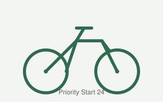
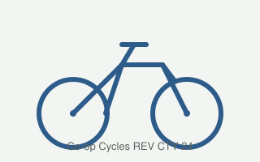
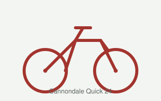
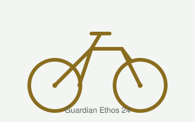

Priority Start 24 vs. REI Co-op Cycles REV CTY 24 vs. Cannondale Quick 24 — the three "Main Options" from your doc — plus the Guardian Ethos 24.
| Priority Start 24 | Co-op Cycles REV CTY 24 (REI) | Cannondale Quick 24 | Guardian Ethos 24 | |
|---|---|---|---|---|
| Photo |
 Real photo → |
 Real photo → |
 Real photo → |
 Real photo → |
| Cost | $469 direct (no cheaper 3rd-party listing found) | $469 + ~$85 assembly/shipping + tax (per your notes — REI's exact assembly fee varies by ZIP and isn't posted publicly) | $549 (REI only) | $349 direct — cheapest of the four; no other major retailer listing found |
| Buy link | prioritybicycles.com/products/start24 | rei.com product 215771 | rei.com product C05538 | guardianbikes.com/products/24-inch-bike |
| Manufacturer page | prioritybicycles.com (sells direct, same page) | Co-op is REI's house brand — REI page above is the only "manufacturer" page | cannondale.com — currently shows "not available in your region," so specs there couldn't be verified | guardianbikes.com (sells direct, same page) |
| Reviews | no reviews found — no on-site review count, but Two Wheeling Tots' editorial review calls it "Highly Recommended" | 4.3 (14) on REI's own site — small sample, but REI verifies purchases | no reviews found — 0 reviews on REI listing (matches your doc's note) | 4.8 (7,762) — by far the most reviews here, but self-hosted on Guardian's own site rather than an independent retailer |
| Wheel size | 24 in (61 cm) | 24 in (61 cm) | 24 in (61 cm) | 24 in (61 cm) |
| Weight | 23.3 lb (10.6 kg) — lightest of the three | 26 lb 1.6 oz (11.8 kg) | not listed by either seller | 25.5 lb (11.6 kg) |
| Gears iNumber of selectable gear ratios. More gears = finer control on hills, but more to learn and maintain. | 3-speed internally-geared hub iInternally geared hub: all the gear-shifting parts are sealed inside the rear wheel hub instead of an exposed derailleur, so there's less to bend, jam, or maintain. | 21-speed (7-speed cassette × 3 chainrings) iCassette/chainring: the classic derailleur setup — a cluster of gears on the rear wheel (cassette) paired with multiple front sprockets (chainrings), shifted by a derailleur that moves the chain between them. | 7-speed derailleur cassette | 7-speed grip shifter, narrower gear range (2.45–5.6 gain ratio) than the REV CTY |
| Drivetrain | Belt drive, no chain (Gates Carbon belt) — nothing to grease, won't rust or stain clothes | Standard chain + derailleur (Shimano Tourney) | Standard chain + derailleur | Standard chain + derailleur; no derailleur hanger, so a crash is more likely to bend the frame there |
| Kickstand | Yes, included | No — several REI reviewers flagged this as a miss at this price | Not specified by seller | Yes, included |
| Brakes | Dual V-pull hand brakes (rim) | Linear-pull rim brakes, short-reach levers | Promax V-brake (rim) | SureStop® linked brake — one lever activates both wheels iLinked braking: a single brake lever applies both the front and rear brake together, so a young rider can't grab only the front brake and flip forward. The tradeoff (per reviewers) is one shared point of failure instead of two independent brakes. |
| Rider fit | Seat height 27–34.5 in (68.6–87.6 cm); inseam 25.5–29 in | Rider height 4'2"–4'10" (127–147 cm) | Rider height 4'1"–4'6" (124.5–137 cm) — smallest top-end fit of the three | Rider height 4'1"–4'9" (124.5–145 cm); seat height 25–33 in |
| Weight limit | 150 lb (68 kg) | not listed | not listed | not listed |
| Availability / notes | Pre-order; code RIDETIME26 = free shipping through 9/15 (site-wide promo as of today, different from the GREATPICK26 code in your doc, which has expired) | REI stock/ship-to-store terms vary by location — check REI listing for current status | Deep Teal sold out; listed as pre-order shipping within ~30 days | In stock direct; ~10-minute assembly per Guardian |
The pictures above are simple illustrations (not real product photos) — I didn't want to re-host the retailers' copyrighted photography here. Each "Real photo" link opens the actual bike on the retailer's page.
Pros: Belt drive means no chain grease/rust/stains; internally geared hub is simple and low-maintenance for kids; kickstand included; soft saddle and grips; three color options.
Cons: Only 3 gears — fine for neighborhood riding, limiting if the kid starts riding real hills or wants to keep pace with multi-geared friends; no on-site customer review count to gauge real-world satisfaction.
Pros: 21-speed gives real range for hills and longer rides; verified REI buyer reviews (4.3/5); linear-pull brakes with short-reach levers sized for small hands.
Cons: No kickstand at this price — a recurring reviewer complaint; heaviest of the three; standard chain/derailleur needs more upkeep than the Priority's belt drive; only sold through REI, so the ~$85 assembly/shipping fee and tax add meaningfully to the sticker price.
Pros: Recognized bike brand; 7-speed splits the difference between the other two; alloy frame.
Cons: Most expensive of the three at $549; zero reviews anywhere; smallest max rider height (4'6"), so least room to grow into; currently sold out in at least one color and on pre-order; Cannondale's own product page isn't accessible right now, so REI is the only place to verify specs.
Pros: Cheapest of the four at $349; kickstand included; linked SureStop brakes remove the "grabbed the front brake and flew over the bars" risk for new riders; by far the largest review base (7,762 ratings, 4.8 avg), which at least signals broad real-world use even if self-hosted.
Cons: Narrowest gear range of the geared bikes here, so weaker on hills than the REV CTY or Cannondale; no derailleur hanger, meaning a derailleur-side crash is more likely to damage the frame instead of a replaceable part; linked braking is a single point of failure and reviewers flag it as unsuitable for more aggressive riders; steel frame adds weight versus the aluminum competitors.
If low maintenance and simplicity matter most (a common ask for a kid's first geared bike), the Priority Start 24 stands out: belt drive and an internal hub mean nothing to grease or derail, it's the lightest bike here, it's the cheapest at $469 with no hidden assembly fee, and it's the only one with a kickstand. The tradeoff is just 3 gears.
If the kid will ride real hills or wants a "grown-up" multi-gear feel, the REV CTY 24 gives the most range (21 speeds) and has the only real customer review data (4.3/5 from verified REI buyers) — but factor in REI's assembly fee and the missing kickstand, and it's the heaviest bike of the three.
The Cannondale Quick 24 is hardest to justify on the numbers alone: it's the most expensive, has zero reviews anywhere, fits the smallest range of rider heights, and its own manufacturer page couldn't be verified — REI's cache and your doc's note that it "ships to REI store only" are the only sources. Recommendation: it would need a specific reason (e.g., brand loyalty, in-hand fit at a local REI) to beat the Priority on value or the REV CTY on gearing.
The Guardian Ethos 24 wins on price ($349, $120 cheaper than the next-cheapest) and on the linked SureStop brakes, which are a genuine safety edge for a nervous or younger rider — that's likely why it also has by far the most reviews. It loses ground on gear range (narrowest here) and on crash-worthiness (no derailleur hanger, heavier steel frame). It's the strongest pick if budget and braking simplicity outweigh gearing and componentry; the Priority is the stronger pick if low maintenance and light weight matter more than price.
To sharpen this further: worth adding the Trek Precaliber 24 or Trek Wahoo 24 from your doc's GEMINI comparison — both are 8-speed and in the same price band ($549–$600), which would test whether Cannondale holds up against more direct 8-speed competitors. Also worth an in-person test ride if any of these are stocked at a nearby REI or bike shop, since fit (seat height, standover) matters more than spec-sheet numbers for kids' bikes.